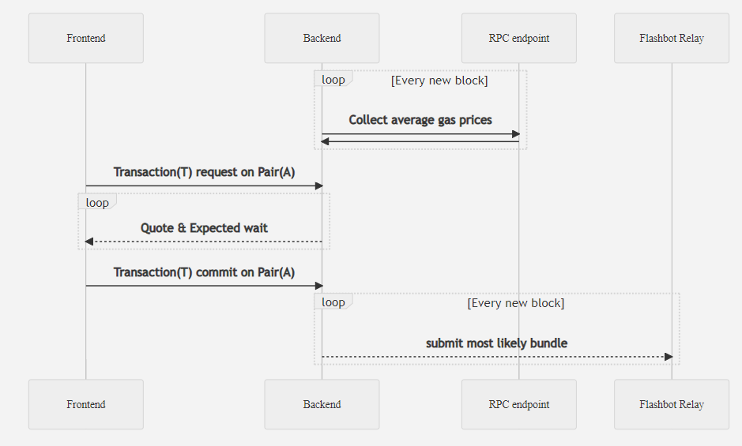
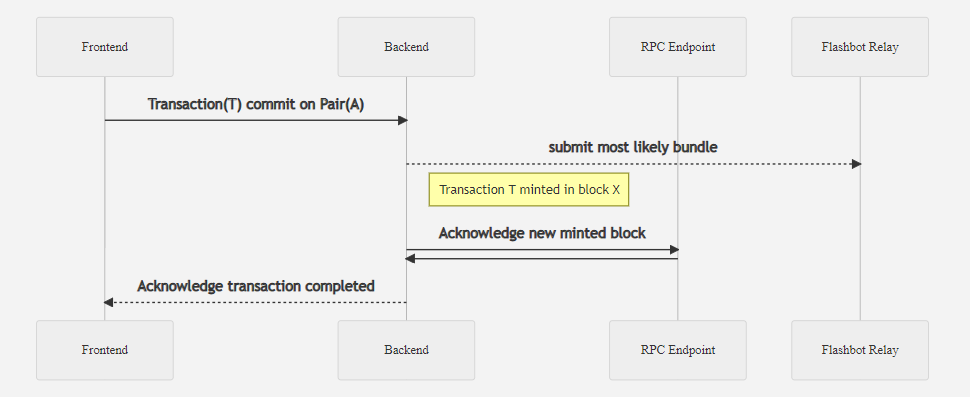

Workflow
Generalized Workflows and Strategies¶
Sandwiching transactions is one of our preferred methods to extract MEV value.
Sandwiching transactions provides some of the simplest logic necessary to extract value from a flow of transactions, and therefore, our initial implementation will rely on this strategy. We intend to expand to other strategies in the future.
The general flow for our model will be accepting new transactions through a front end on supported pairs. Users query their specific transaction and we estimate a quote on how much it will cost them to perform their transaction, along with a wait time. If the user chooses to commit their transaction, they agree to a transaction to be performed no worse than the quote by the timeout given; We then add the new transaction request into our backend to be bundled.
Ideal Workflow¶

If we can find a bundle that is worth being minted before the transactions timeout period, we will submit the bundle to the miners, and then wait for the next block minted to acknowledge our bundle. If our bundle is in the next block, we send an acknowledgement back to the front end.
Ideal Success¶

If we cannot find a bundle that includes transaction T before their timeout, we will report back to the front end, acknowledging that their transaction has timed out.
Ideal Failure¶

'BLT' Sandwiching¶
Before flashbots, sandwich attacking involved finding a sequence of transaction to be able to back run, meaning to put a desired transaction behind a large transaction experiencing high slippage, to experience positive slippage caused by the large transaction before hand. In our case, we're working with a private transaction flow where we can sequence them however we choose, meaning we can produce and capture MEV opportunities that would typically be exploited by a third party. the key to sandwiching with a reliable benefit to our users is to sequence transaction flow such that the cost that each transaction would experience is less than if they had all placed their orders individually. Ideally we should look to sequence the opposite transaction behind significant transactions in one direction to capture this MEV potential.
Miner bidding¶
A factor to be considered by our system for producing possible bundles is to ask if the bundle is profitable enough to cover the bid require to be minted, while still having left over value to redistribute to the front end users, and the community as a whole. What a miner will accept can be approximated by viewing the previous minted blocks transactions, and looking at the bottom N transactions within that block. Those bottom N transactions are the transactions with the cheapest gas prices that were still minted into the block; in order to have our bundle minted into a block, we must be able to beat or match the last N transactions within a block's gas prices. If we assume that we will always sandwich 3 transactions together into 1 bundle, we can approximate that we must beat whatever the last 3 transactions in the last minted blocks' gas prices were.
Given minted transactions $\(T={t_1,…,t_k}\) in previous block, we know we must provide a higher payout than \(T_{min}=[t_{k-n},t_k]\), where \(N\) is the number of transactions within bundle \(B\), and payouts are determined by the gas price \(t^g_n\) and gas limit \(t^l_n\), we know our bid \(B_{bid}\) must be:
\(B_{b i d}>=\sum_{n=0}^{B_{n}-1} t_{k-n}^{g} * t_{k-n}^{l}\)
Quote pricing¶
Giving a reasonable quote to the front end user will depend on that inherent value of the transaction being posted in relation to what transactions we currently have pending to be minted, namely its volume of tokens being swapped.
Fee estimation algorithm¶
Estimate gas based on historical data and set it as Gas_Limit
Take a margin of L>1 and set Limit_used = Gas_Limit * L
For each executed transaction(With Limit_Used), read the actual gas used: Gas_used
If Gas_used > Gas_Limit, set Gas_Limit = Gas_used, Limit_used = Gas_used * L
If a transaction fails for insufficient gas:
Run estimateGas() on the failed transaction and obtain Failed_Limit <br>
Create and sign a new transaction <br>
Retransmit transaction with new estimation <br>
Update Gas_Limit = Failed_Limit <br>
Raise error for investigation <br>